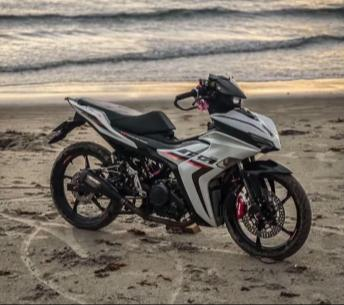

What is STGP?
STGP is a way of customizing small bikes so they look like a big MotoGP-style bike.
With every builder and the art they are making, there is no doubt that STGP is a concept where people are reckless with their money. Every modification costs thousands, and every build is aggressive. The combinations of every color and how they fit the fairings and parts are what make STREETGP such a unique community.
